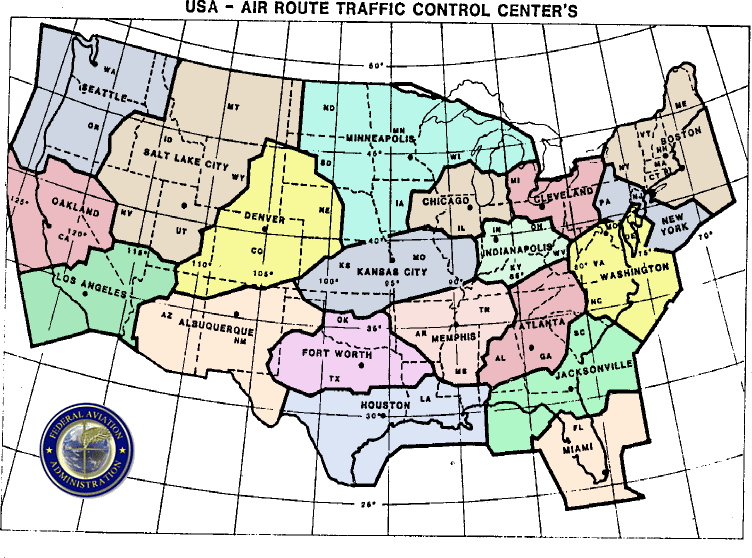

Mineta's motives
Some researchers argue that Mineta "mixed up" times unintentionally. Mineta does not only report the wrong time, however, but the identity of the incoming plane, too, and this was certainly not unintentional. Bob Woodward had interviewed him in January 2002 already:
Transportation Secretary Norman Y. Mineta, summoned by the White House to the bunker, was on an open line to the Federal Aviation Administration operations center, monitoring Flight 77 as it hurtled toward Washington, with radar tracks coming every seven seconds. Reports came that the plane was 50 miles out, 30 miles out, 10 miles out-until word reached the bunker that there had been an explosion at the Pentagon.
Like everybody in the PEOC and the White House, Mineta was aware of the Pentagon crash after 10 o'clock. So as a direct witness of Cheney's shootdown order, he knew that the order didn't refer to the plane that hit the Pentagon, a detail he certainly had not forgotten when testifying to the Commission.
This leaves us with the only conclusion that Mineta lied in his testimony and the interesting question why he did it. I do not claim to be able to look into his head, but there are three key points:
- Vanity: Mineta has shown that he is not immune against giving himself airs; for instance, he claims to have issued the historical FAA grounding order, but in The Mineta Myth we learn otherwise.
- Carelessness: Mineta has shown that his public remarks are not always well thought-out; in this interview from June 2006 he himself delivers contradiction to his testimony in reporting how people were running out of the White House when he arrived there. He testified that he arrived at 9:15~9:20 at the White House, but at this time, there were no panicky people running away. This happened at 9:40~9:45.
- Pressure: Mineta was probably not supposed to talk about certain things that happened in the PEOC. It is only this last point that I will concentrate on now.
It should be noted that his story was on the public market since his congressional testimony of September 20, 2001, that's why he was compelled to repeat it. Weeks later, he was thoroughly squeezed out by Woodward, but he had no motive to fantasize a story out of the blue. So while he was pleased to tell Woodward insider stories of what he experienced in the PEOC, he understandably didn't dare to bust the official story by mentioning "phantom Flight 93" - this is the plane that caused Cheney to issue his "shootdown order".
I will now try to make the case for my main thesis:
Mineta indeed was talking about a plane that was headed towards Washington, and it was identical to the ominous plane that allegedly crashed near Camp David. But the existence and identity of this plane was supposed to be kept hidden. And Mineta played alongside the rules.
Evidence for the Camp David crash rumor
Surprisingly, there is a lot of information to find out about the Camp David crash. So let's chase it down. Whether the crash was fact or only rumor doesn't matter for the moment; what's relevant is that the crash message was common knowledge to a lot of top-level government officials and even leaked out to the media.
Source #1: Powell's news conference; all we know at this point is that a hijacked airliner allegedly crashed in the vicinity of Camp David. No details available yet.
Source #2: CBS News; the following segment was aired at about 11 a.m. We learn here that the plane belonged to United Airlines and had the flight number 93. Source: FAA, via FBI. This is very strange, of course, because the Pennsylvania crash had already been reported 30 minutes earlier by CBS and other stations (without identifying the airliner, however).
STEWART: The source of this information is an FBI official in Washington who says that he has been informed by the FAA; has not confirmed it, himself, but has been informed by the FAA that a United Airlines flight--he says it's United Airlines Flight 93--has crashed into the vicinity of or at Camp David.
Dan, I will tell you one other thing, too, that the FBI and terrorist experts here have immediately noted. And that is today, September the 11th, is the anniversary of the Camp David accords signed at that historic location after--after weeks of negotiations between the Arabs and the Israelis and, of course, has been a thorn in the de--side of--of both parties now for some years and--and a source of great consternation. You can't help but notice, according to the FBI, the coincidence of the date. And now, if this is true, the coincidence of the target. Dan.
Source #3: Northwestern Chronicle; here we learn that the plane was "forced down" by F-16 fighters near Camp David, which can be interpretated as a shootdown.
Source #4: 9/11 Commission Report; here's a radio conversation between NEADS and a controller from Washington Center (p. 31):
NEADS: I also want to give you a heads-up, Washington.
FAA (DC): Go ahead.
NEADS: United nine three, have you got information on that yet?
FAA:Yeah, he's down.
NEADS: He's down?
FAA:Yes.
NEADS: When did he land? 'Cause we have got confirmation-
FAA: He did not land.
NEADS: Oh, he's down? Down?
FAA: Yes. Somewhere up northeast of Camp David.
NEADS: Northeast of Camp David.
FAA: That's the last report. They don't know exactly where.
The extremely vague description of the crash site - "somewhere northeast of Camp David" - shows that the airplane in question here is not identical to the plane that crashed near Shanksville, because the location of the latter one was known to the FAA with a high degree of accuracy: 15 miles south of Johnstown. Here's a radio talk in reference to the Shanksville crash (Source: 9/11 Commission report, p. 30):
Command Center: O.K. Uh, there is now on that United 93.
FAA Headquarters: Yes.
Command Center: There is a report of black smoke in the last position I gave you, fifteen miles south of Johnstown.
FAA Headquarters: From the airplane or from the ground?
Command Center: Uh, they're speculating it's from the aircraft.
FAA Headquarters: Okay.
Command Center: Uh, who, it hit the ground. That's what they're speculating, that's speculation only.
Which controller would circumscribe the location of Shanksville by "somewhere up northeast of Camp David"? Camp David is about 100 miles away from Shanksville. So this is strong evidence that twe two "United 93"s are not identical, and that NEADS and Washington Center were aware of the alleged Camp David crash, too.
Source #5: Arlington After-Action Report; this report confirms the CBS information about airline and flight number, mentions the same sources (FAA/FBI) and adds a few details: this "United 93" was heading towards Washington at about 10:15 and caused an evacuation of the crash site at the Pentagon. It proceeded on its way and dropped under radar when it was 4 minutes away from the Pentagon.
The first of these (evacuations) occurred at about 10:15 a.m. on September 11, when Special Agent Combs told Chief Schwartz another hijacked airliner was flying on a trajectory toward Washington, DC, and was 20 minutes away. Special Agent Combs got this information from the command center at the FBI WFO, which was in direct contact with the Federal Aviation Administration (FAA). Using a radio belonging to an airport firefighter, he confirmed the information directly with the control tower at Ronald Reagan Washington National Airport. The Incident Commander ordered fire and rescue personnel to relocate to the relative safety of a highway overpass. The evacuation required fire and rescue personnel to move in full firefighting gear the equivalent of five football fields. Chief Schwartz issued a warning with each flight status update until the last warning when the airliner went below radar coverage in Pennsylvania, an estimated 4 minutes flying time from the Pentagon. Five minutes later, Special Agent Combs told him the airplane had crashed in Pennsylvania and the all clear was sounded. At 10:37 a.m., United Airlines Flight #93 crashed into a field near Shanksville, PA. The heroic actions of doomed passengers had thwarted the terrorist plan.
...
At about 10:15 a.m. on September 11, the WFO Command Center was notified by the Federal Aviation Administration (FAA) that another airliner, United AirlinesFlight #93, was hijacked after taking off from Newark, NJ, and was flying on acourse from western Pennsylvania toward the Washington Metropolitan Area. The FAA estimated it would reach Washington, DC, in 20 minutes. The Command Center relayed the information to Special Agent Combs at the ACFDICP who alerted Chief Schwartz. Special Agent Combs located a Washington Metropolitan Airports Authority (WMAA) firefighter equipped with a radio and confirmed the information about Flight #93. Chief Schwartz ordered a complete area evacuation, directing the response force to relative safety beneath nearby highway overpasses. Special Agent Combs stayed at Chief Schwartz’ side, giving him updates as the FAA tracked the course of Flight #93. The last update came when the airliner was 4 minutes away from the Pentagon. Five minutes later, Special Agent Combs reported to Chief Schwartz that Flight #93 had crashed into Camp David in Maryland. In fact, it crashed in a field near Shanksville, PA. Chief Schwartz sounded the all clear.
The PEOC situation
The latter report (hereafter referred to as AAAR) is most important because
- it confirms the CBS report that Washington FBI was the source for the Camp David crash info (after being informed by the FAA);
- it is the missing link between the Camp David crash and the Commission's "phantom Flight 93", matching its time, distance, direction, and flight number (p. 41):
At 10:02, the communicators in the shelter began receiving reports from the Secret Service of an inbound aircraft-presumably hijacked-heading toward Washington. That aircraft was United 93.The Secret Service was getting this information directly from the FAA. The FAA may have been tracking the progress of United 93 on a display that showed its projected path to Washington, not its actual radar return. Thus, the Secret Service was relying on projections and was not aware the plane was already down in Pennsylvania.
At some time between 10:10 and 10:15, a military aide told the Vice President and others that the aircraft was 80 miles out. Vice President Cheney was asked for authority to engage the aircraft.218 His reaction was described by Scooter Libby as quick and decisive, "in about the time it takes a batter to decide to swing." The Vice President authorized fighter aircraft to engage the inbound plane. He told us he based this authorization on his earlier conversation with the President. The military aide returned a few minutes later, probably between 10:12 and 10:18, and said the aircraft was 60 miles out. He again asked for authorization to engage. The Vice President again said yes.
It should be noted that the Secret Service was directly linked to FAA radar data and thus able to track "Flight 93" on his own display. This is confirmed by Richard Clarke ("Against all enemies") and, more clearly than in the final report, in the Commission's "Staff Statement No.17":
At 10:02, the communicators in the shelter began receiving reports from the Secret Service of an inbound aircraft—presumably hijacked—heading toward Washington. That aircraft was United 93. The Secret Service was getting this information directly from the FAA, through its links to that agency. The Service’s operations center and their FAA contact were tracking the progress of the aircraft on a display that showed its projected path, not its actual radar return.
So the Secret Service was able to track the path of "phantom Flight 93" just like the FAA and the FBI. This means that he knew of the crash rumor, and of course he forwarded the message to Cheney and the PEOC crew. Furthermore, Colin Powell had spoken with Condoleezza Rice, who was in the PEOC, and they certainly exchanged the crash information. And Mineta himself was on an open line to the FAA, the primary source of the message. This is sufficient evidence that Mineta was not only witnessing the inbound "phantom Flight 93" in the PEOC, but its alleged subsequent crash at Camp David, too.
But with the exception of Powell, no government official lost a word about the Camp David crash. Note that this prevalent silence was not due to the rumor character of the information; none of the officials shied away from mentioning the rumored car bomb at the State Department despite the fact that it was quickly discounted. But the Camp David rumor was never mentioned by Cheney, Mineta, Clarke, or Rice.
We are now in a position to relive Mineta's perception of the PEOC occurrences.
The Secret Service and the "young man" repeatedly update the politicians about the incoming Flight 93. A very scary situation. At about 10:12, Cheney orders the military to engage the plane, and the order is repeated and confirmed a few minutes later. Then, some minutes later again, a plane crash at Camp David is reported. Mineta must believe that the plane has been shot down there by the air force (there were indeed reports circulating that the plane was "forced down" by fighters). He soon realizes that this shootdown is not meant to become public, so he keeps his mouth shut in his congressional testimony on September 20, but weeks later he can't resist to tell Woodward interesting insider stories about a scary hijacked plane on its way to Washington. The existence of the plane is not part of the official story, however, so he projects his experiences onto Flight 77, not realizing that this distortion of the truth generates plenty of contradictions.
This sequence of events is not meant as proven fact, rather to present a plausible explanation why Mineta was not honest. And it is certainly less speculative than the theory that Cheney issued a "standdown" order to allow Flight 77 attacking the Pentagon because it's not based on the questionable premise that Mineta and Cheney were in the PEOC before the Pentagon strike.
Now is the time for "phantom flight 93" and the Camp David crash to undergo a reality check. Was "phantom flight 93" only a radar blip without corresponding physical existence, or was it a real plane?
Evidence for the existence of "phantom flight 93"
The 9/11 Commission presents a stunning solution for the phantom flight: the FAA didn't submit position data of a real plane, but the "projected path" of Flight 93, i.e they were guessing its position. This means that Cheney's shootdown order was meant for a not existent flight, and that the evacuation of the Pentagon area, disrupting the efforts of so many firefighters, was based on a false alarm.
But you might ask: how can a phantom flight - i.e. a pure radar blip - go "under radar coverage", as reported in the AAAR? And how does it look like when a phantom flight crashes, also reported by the AAAR? And how is it possible that the FAA conveys false position data of a hijacked airliner to the FBI and the Secret Service in the most threatening situation one can imagine?
The Commission's explanation implies that the responsible FAA controllers were complete failures, i.e., they propose the well-known "incompetence" theory. Here's an alternative and better founded answer: the "phantom Flight 93" was no phantom; it was a real plane flying towards Washington. If it was indeed Flight 93 is of secondary interest at the moment. But there is indeed strong confirmation that a plane called "Flight 93" was observed after the Shanksville crash:
In contrast, controllers at the Washington Air Route Traffic Control Center had much more warning that something was wrong. Those controllers, who handled American Airlines Flight 77, which dived into the Pentagon, knew about the hijacking of the first plane to crash, even before it hit the World Trade Center, those involved said. That was more than an hour before they watched another hijacked plane, United Flight 93, cross their radar screen on its way to the Pentagon. ( New York Times, 9/13/2001; )
This is confirmed by Leslie Filson, who has spoken with many military members for his book "Air War over America", p. 79:
Everything was happening at once, says wing safety officer Lt. Col. Phil Thompson, who was now the acting SOF. "We were taking calls from the Secret Service and Washington Center", he recalls. " We have a special relationship with the Secret Service and know these guys by name and face...They were worried about Flight 93."
Neither Filson nor the New York Times nor the AAAR mention a "projected fligh path" or a "phantom flight". Their sources talk about a real airplane named "Flight 93" inside Washington Center airspace. The problem here is that according to the official story, Flight 93 was never in or near the airspace of Washington Center, but crashed at Shanksville which is covered by the adjacent Cleveland Center.
Conclusion: the Commission's fishy claim that the radar signal tracked by the FAA and the Secret Service was just a phantom is contradicted by Filson, the New York Times, and the AAAR. Their sources don't mention a "projected flight path" or a "phantom flight". They talk about a real airplane named "Flight 93", which is not identical to the plane that crashed at Shanksville, however.
The Camp David crash - just a rumor
At Camp David, there were indeed rumors going around that a plane had crashed near Thurmont, which is 3 miles away:
Early reports that an airliner had crashed on or near Camp David, the presidential retreat in Western Maryland's Catoctin Mountains, proved unfounded.
Theresa Hahn, manager of banquet and catering services for Thurmont's Cozy Restaurant, the Camp David haunt of the presidential media retinue, said at mid-morning yesterday that she heard that a plane went down about three miles from Thurmont, in the Catoctin Mountain National Park.
Thurmont is located about three miles east south east of Camp David.
"Lots of fire trucks were on the road and no one can get up there," Hahn said, adding that she had not been able to get through by telephone to an aunt who lives closer to Camp David on the other side of the state park. ( http://findarticles.com/p/articles/mi_qn4183/is_20010912/ai_n10048109 )
While Mrs. Hahn has observed strange activities ("lots of fire trucks"), her account about a plane crash is only hearsay. J. Mel Poole, Catoctin Mountain Park superintendent, denied a crash at Camp David or Catoctin Mountain Park. An official report of the National Park Service gives no hints either. Lacking any witness accounts of smoke, noise, etc. this means there is no evidence that any accident happened there.
Interestingly, after the crash rumor had popped up in the news, Camp David appeared in the news for a second time, but in a different context:
Rep. James Moran, D-Va., said after a Marine Corps briefing in Washington that Flight 93 was apparently intended for Camp David, the presidential retreat in the mountains of Maryland.
http://www.post-gazette.com/headlines/20010911paplanep3.asp
Unfortunately, we don't learn why Flight 93 was so "apparently" intended for Camp David. Given the 100 miles distance between Shanksville and Camp David, this assumption doesn't make sense and was apparently supposed to "blur the picture" and cover up the crash information that was leaked shortly before. Now the news was not "a plane crashed near Camp David", but "the plane that crashed in Pennsylvania was headed for Camp David". An obvious attempt to sweep the "phantom Flight 93" and its alleged crash under the carpet.
Conclusion: the "phantom flight 93" existed, but it didn't crash; this means it's still unaccounted for. The inventor of the Camp David crash rumor wanted to make the plane - whose existence had been leaked to the media already - vanish from the news as quickly as possible. Its existence was not meant to come to light. And Norman Mineta was not willing to bring it to light. Colin Powell's remark was a singular unplanned mishap.
The Camp David crash rumor seems to be the origin of the "shootdown myth" - a carefully planted limited hangout to make people believe that the government covered up the shootdown of Flight 93. Additionally, it served as a cover-up for the secret and rarely reported landing of a mysterious plane at Cleveland airport...
The Cleveland Airport situation
So what happened to "phantom Flight 93" if it didn't crash, the interested reader might ask. Interestingly, an airliner whose identity is still not clarified made an emergency landing at Cleveland airport at 10:45. The Akron Beacon Journal reports:
Cleveland Mayor Michael White said at a news conference this morning that a Boeing 767 out of Boston made an emergency landing at Cleveland Hopkins International Airport because of fears a bomb was aboard.He reported that air traffic controllers could hear screaming aboard the plane.The 200 passengers were reportedly released from the plane at 11:15 a.m., though White said the pilot was still concerned that a bomb remained.
And according to someone who was at Cleveland Airport on 9/11, this airliner was the same one that was reported headed towards Camp David somewhat earlier:
I'm sure there was a fifth plane involved that was headed toward Camp David; however, that plane was forced (yes forced, militarily) to land in Cleveland. I thought the target could also have be NASA's Glen/Lewis Research Center that is right next to the Cleveland Airport. The news reported that the plane landed because of a suspected bomb on board but they haven't released anyone that was on that plane. The closed NASA and transported everyone that was on the plane there for questioning.
{kind=link}
{kind=link}